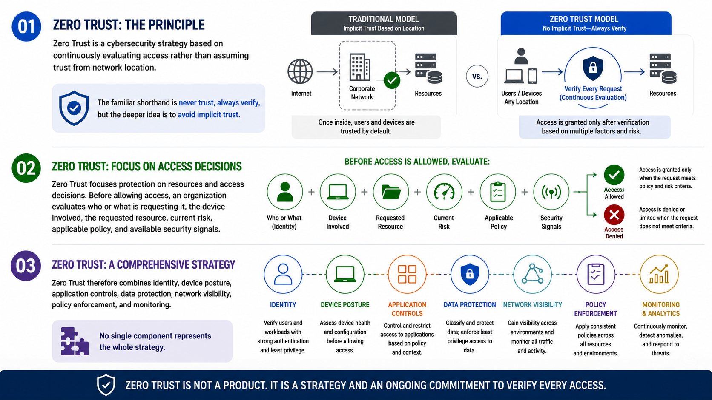

What Is Zero Trust?
Introduction to Zero Trust
Connecting to LMS... Progress: in progress
Version 1.0 | Date: 2026-06-16 | Educational overview of Zero Trust concepts.

Narration
Zero Trust is a cybersecurity strategy based on continuously evaluating access rather than assuming trust from network location. The familiar shorthand is never trust, always verify, but the deeper idea is to avoid implicit trust.
Traditional security models often placed strong controls around a network perimeter and treated activity inside that boundary as more trustworthy. Modern environments make that assumption less reliable because users, devices, applications, and data operate across many locations.
Zero Trust focuses protection on resources and access decisions. Before allowing access, an organization evaluates who or what is requesting it, the device involved, the requested resource, current risk, applicable policy, and available security signals.
Verification is not limited to the first sign-in. Conditions can change during a session: a device may fall out of compliance, an account may show unusual activity, a resource may become more sensitive, or threat information may raise concern.
Zero Trust therefore combines identity, device posture, application controls, data protection, network visibility, policy enforcement, and monitoring. No single component represents the whole strategy.
The goal is not to make work impossible or to treat every person as malicious. The goal is to make access explicit, appropriately limited, observable, and responsive to risk while still supporting business operations.
Zero Trust also does not promise to eliminate cyber risk. It helps reduce unnecessary access, limit exposure, improve visibility, and make security decisions using stronger context than physical or network location alone.
This course provides educational information about Zero Trust concepts. It is not architecture guidance, implementation advice, compliance guidance, or vendor-specific recommendation material.